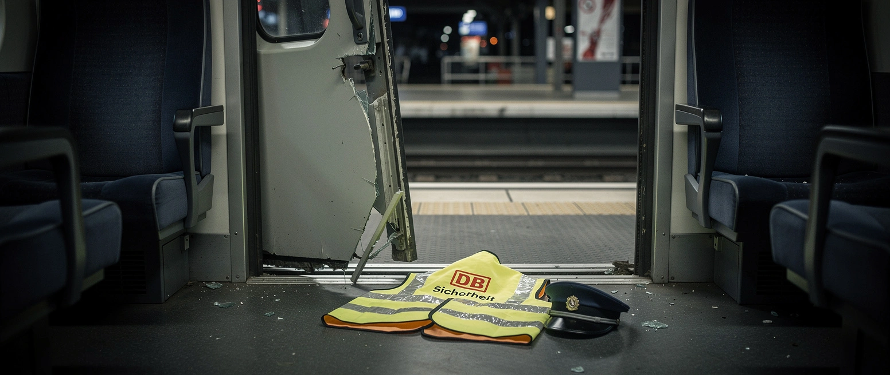

Auf freiem Fuß

Ein 26-jähriger Sicherheitsmann der Bahn liegt seit Freitag in Lebensgefahr. Bei einer Fahrscheinkontrolle im Regionalzug von Offenburg nach Karlsruhe geriet er mit einem Fahrgast aneinander und stürzte bei etwa 120 Stundenkilometern aus dem fahrenden Zug. Gefunden wurde er schwerst verletzt neben den Gleisen.
Auslöser war die Kontrolle. Ein 36-Jähriger, mutmaßlich betrunken, soll die hinzugerufenen Sicherheitsleute beleidigt haben, dann kam es zur körperlichen Auseinandersetzung. Der Mann ist mehrfach wegen Gewaltdelikten vorbestraft.
Die Staatsanwaltschaft beantragte einen Haftbefehl wegen gefährlicher Körperverletzung. Das Amtsgericht lehnte ab. Der Beschuldigte ist wieder auf freiem Fuß, während sein Opfer um sein Leben kämpft.
Es ist nicht der erste Fall. Im Februar wurde ein Zugbegleiter bei einer Ticketkontrolle totgeprügelt; vergangene Woche bekam der Täter zehn Jahre. 2025 zählte die Bundespolizei rund 2.690 Angriffe auf Bahnpersonal, elf Prozent mehr als im Jahr zuvor. Die Bahn hält Sicherheitsgipfel ab und verteilt Bodycams.
Mehr dazu: Zu Tode gespart, sagen beide.